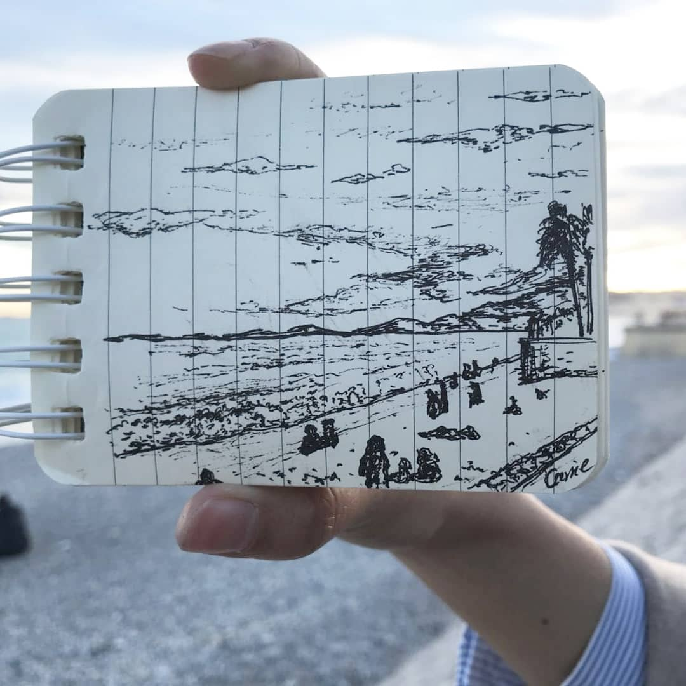
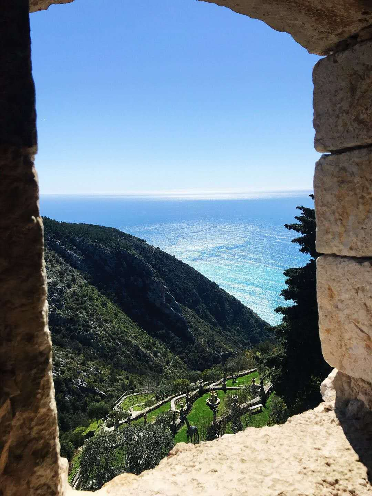
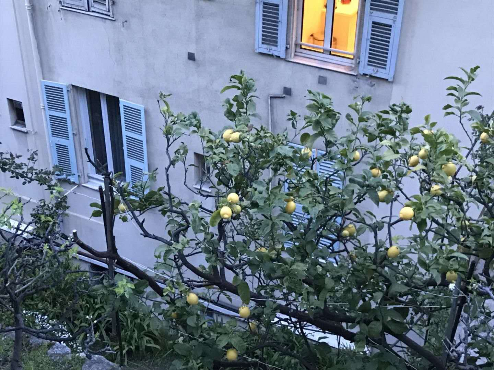
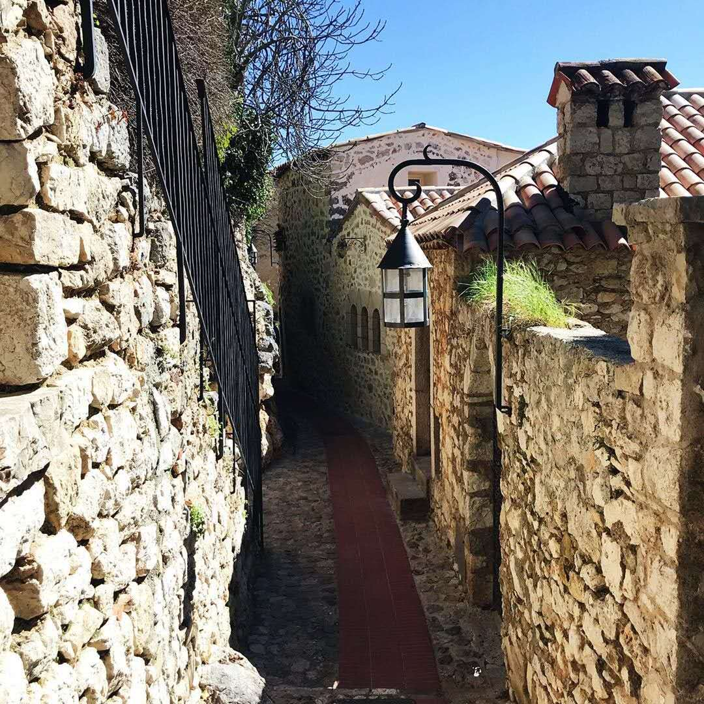

On 31/03/2018, I was very excited when I arrived at Nice, the beauty of The French Riviera (蔚蓝海岸), but soon after this kind of falling-love-feeling turned to nightmare.


I think it’s quite important to write down my experience about Nice
To warn everyone who wishes/has planned to visit European cities.
00 HAPPEN
Frankly speaking, I, myself is a very cautious person. I’m living in Milan, where THEFT INDUSTRY is as well-known as its luxury culture. From the moment of departure, I put my hand against the back-bag from time to time. But for only few minute when we wandered across Nice Old Town, just few moments, I released my hand.
That’s the moment the bloody thief stole my wallet. But the most stupid point is I even didn’t realize till next morning(ok, it’s my fault, I should check my wallet at least once). Includings were one italian debit card, two chinese card, chinese ID, Italian ID and 90 euro cash…
What I can do then was just to block cards and report to Nice police station, then continue the trip(because my friend was not ought to pay me a terrible trip unfairly).
01 WORSEN
During the next few days, I was tortured by the mixed feeling of regret to parents+self-blame+rising hope then disappoint+appreciation of magnificent scenery+pleasure of chatting with Y.+surprises on street.
I even comforted me that the bank account is safe(It’s strange indeed, because none of the chinese cards was consumed, so I receive no messages then)
Two days later, I returned to Milan. When I have already accept this troublesome situation, I was told that the Italian debit card was ‘pre-authoritized’ 600 euros!
So what’s pre-authoritized? It’s a funtion to charge for deposit, but without signature requestment. The thieves group must have employed a card master!
Anyway, I couldn’t feel my body, my brain, and my soul then…all go with the wind.
02 TURN
In that morning, I rushed to the bank asking for help. Here I feel quite grateful to the lovely bank staff. He comforted me immediately, and taught me what to ask the police station for. The most important thing is HE TOLD ME THESE TRANSACTIONS COULD BE RETURNED BACK EVEN THOUGH HE COULDN’T CANCLE.
Firstly, the bank print my movements of recent month.
Then in the following 2 days, I went to the police station ask for a report which clarifies my card was stolen and the trasactions are frauds.
Next, I went back to bank with the reports. The bank could report to MASTERCARD central station about these fraud trasaction, so that mastercard will disapprove the release of money.
03 THOUGHTS
During the whole process, all the staffes, no matter whom he works for, are very friendly and warm to me(maybe it’s because I’m pretty hahah). This incident proves that Italian officers are very trustful when the problem is about principle.
The reason that I can deal very fluently is the trust system in Europe. I searched some cases similiar to me in Chinese. But if this happens in China, basically the bank will not help you so strongly. On the contrast, they’ll doubt if you wanna fraud the money from bank. The mechanism is different, not about the bank staff.
04
I hope this story could get a happy ending! And this terrible experience didn’t affect my love of Nice’s scenery anyway.

